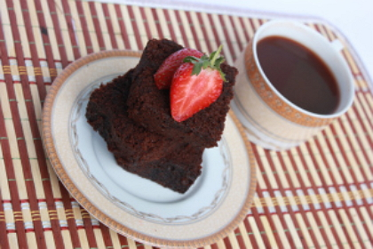
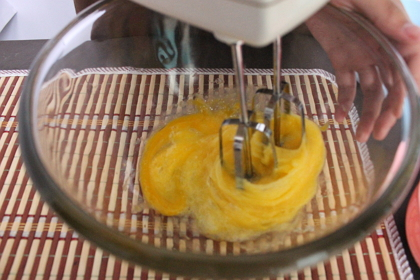
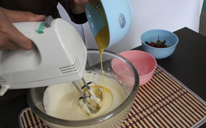
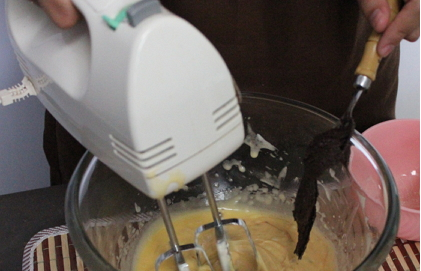
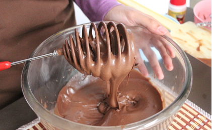
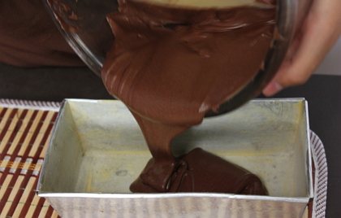
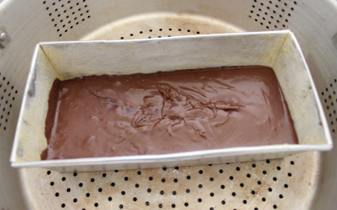

Resep Brownis Kukus
Bahan bahan:

- 75 gram gula pasir
- 75 gram mentega
- 170 gram coklat
- 75 gram terigu
- 4 buah strawberry
- 2 butir telur
Langkah langkah:
1. Terlebih dahulu, siapkan bahan-bahan yang sudah saya sebutkan di atas seperti gula pasir, mentega, coklat, terigu, telur dan strawberry untuk hiasan brownies.
2. Kedua, masukkan 2 butir telur dan gula pasir ke dalam wadah, kemudian aduk hingga rata menggunakan mixer.
n

3. Aduk terus sampai adonan mengembang dan berwarna putih.
4. Setelah itu, masukkan terigu dan mentega yang telah dicairkan ke dalam adonan sambil tetap mengaduknya menggunakan mixer.

5. Sambil tetap dalam posisi mengaduk, tambahkan coklat yang telah dicairkan sebelumnya ke dalam adonan.

6. Aduk kembali adonan hingga benar-benar merata. Anda bisa menggunakan whisk untuk mengaduknya agar semua adonan tercampur rata.

7. Selanjutnya, tuangkan adonan ke dalam loyang yang sudah diolesi dengan mentega.

8. Masukkan adonan yang sudah dituangkan ke dalam loyang tadi ke dalam panci kukus. Kemudian kukus selama 30 menit dengan api yang kecil, jangan menggunakan api yang terlalu besar supaya mekarnya bisa bagus.

9. Viola! brownies kukus sudah siap dihidangkan. Anda bisa menghiasi browniesnya dengan strawberry di atasnya.